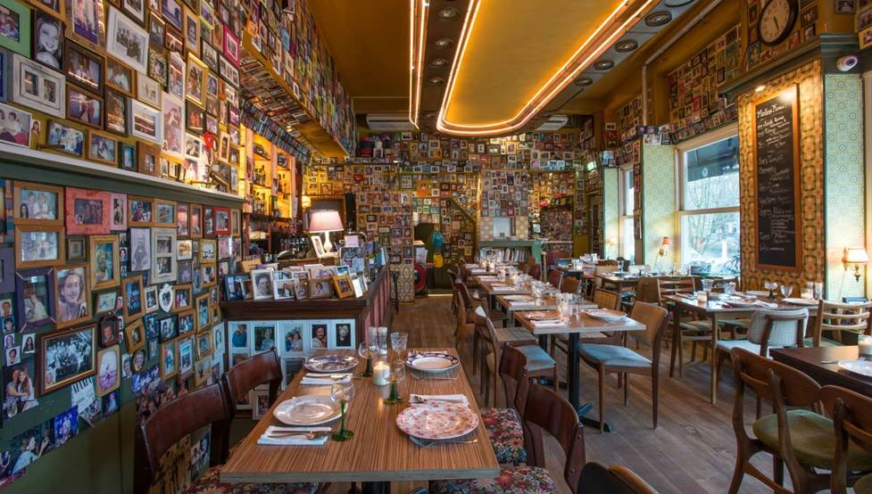
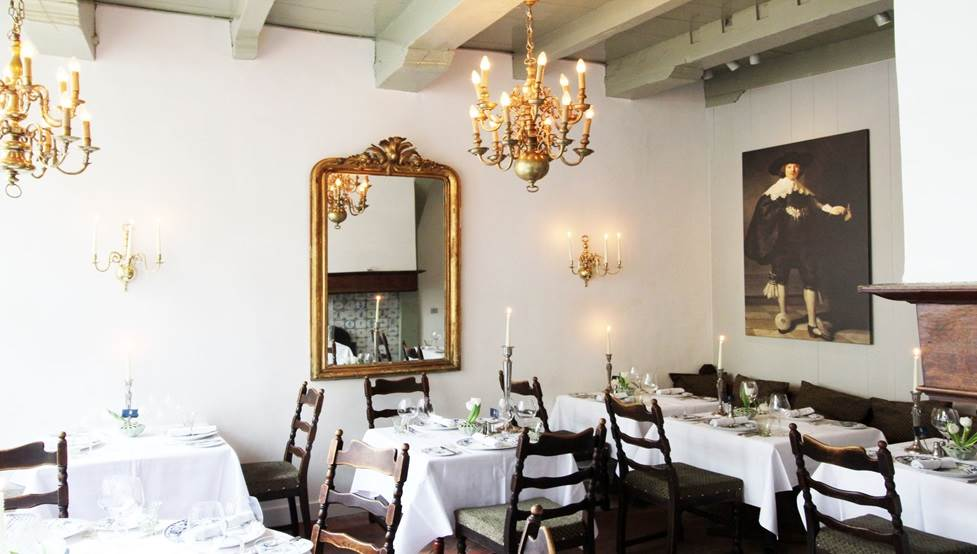

Go 2C World.
Home
Country
Town
Contact Us
Amsterdam | Places to Eat
Where food speaks with your palate.
Satisfying people’s hunger for life’s simple pleasures

Restaurant Moeders
Mom's home cooking is always best, but Amsterdam tourists don’t always have the opportunity to share a meal at home with the locals.
⭐⭐⭐⭐⭐
Rijks
Where better to sample Dutch cuisine than right next to the hub of history and culture in Amsterdam?
⭐⭐⭐⭐⭐

De Silveren Spiegel
De Silveren Spiegel (The Silver Mirror) offers traditional Dutch food in the stunning surroundings of a historic building.
⭐⭐⭐⭐⭐